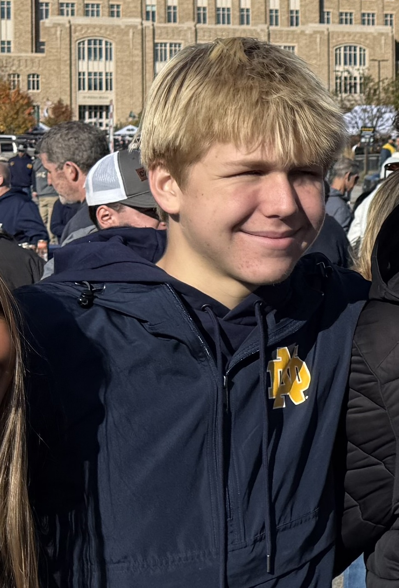

William Eschenbach
Downers Grove, Illinois · Butterfield Country Club · Handicap 4

- Hometown
- Downers Grove, Illinois
- Home course
- Butterfield Country Club
- Handicap
- 4
- Family
- Nephew of GolfDoc Michael Maier, M.D.
William Eschenbach is a golfer from Downers Grove, Illinois, and the nephew of Golden Helmets & Green Jackets host Michael Maier, M.D. — Uncle Butchy, the GolfDoc. He plays out of Butterfield Country Club and carries a 4 handicap.
He is a member at Butterfield and learned to play in part at Downers Grove Golf Club, renamed Belmont Golf Club in 2023. William and his Uncle Butchy—the GolfDoc—have enjoyed several good matches at Downers Grove. The Downers Grove Park District has owned the course since 1968. The club and the Park District say this site opened in 1892 as the original Chicago Golf Club, a nine-hole course, and that nine more holes in 1893 made it the first 18-hole course in the United States. In 1895 Chicago Golf Club moved to a new course in Wheaton; the Park District says the original course in Downers Grove was nine holes again. Belmont Golf Club history · Park District account
William made his first hole-in-one with a 7-iron from 156 yards and told the story on the show before heading to Lambeau Field to watch Notre Dame.
⛳ A proud GolfMDVIP athlete.
First hole-in-one
On the Sep 5, 2026 bonus episode, William described the ace: a 7-iron from 156 yards, punched under the wind. The episode is First “Hole in One” for future young Irish Fan on way to Lambeau Field!
Hometown, home course, the family connection, and the 7-iron from 156 yards are from William’s Sep 5, 2026 appearance on Golden Helmets & Green Jackets.